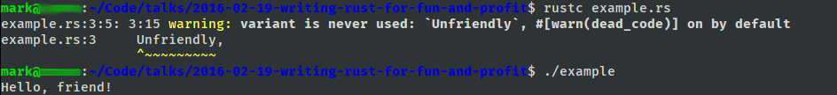

Writing Rust for Run
(& Profit?)
Presenter: Mark Lee, Pythonista, Sometimes-Rubyist, and Novice Rustacean
February 19, 2016
Today I'm going to go through an overview of the Rust programming language and possible applications to our ecosystem, in the form of example use cases.
Let's start with the question, "What is Rust?"
System Programming Language
- Low-level
- No built-in JIT / garbage collector
- Competes with C and C++
Rust is designed as a system programming language. Generally speaking, that means that it's low-level - if you want, you can even compile code to not use a system runtime. This is particularly useful if you are writing an operating system (and I'm aware of at least two projects that are doing so). There is also no built-in JIT or garbage collector, so it's more like C or C++ than a lot of other contemporary languages.
Memory Safe
- No malloc / free
- No NULL
- Unsafe operations are delimited by unsafe { … }
The main reason why I like Rust is that unlike C or C++, it is memory safe by default. For me, this means two things: I don't have to worry about allocating and freeing memory manually, and I don't have to worry about the NULL case, because NULL doesn't exist. Well, that's not entirely true. If you know what you're doing, you can write "unsafe" code that uses one or both of memory allocation or NULLs if you wrap it in an unsafe block. As the Zen of Python says, "Explicit is better than implicit."
History
- Started ~2010
- Released 1.0 in May 2015
- New version released every ~six weeks
- Current version: 1.6
Rust is a relatively new language, started around six years ago. (For comparison, Python started around 1991, Ruby and PHP around 1995, Go in 2009.) Version 1.0 was released last May, and since then, a new stable version is released approximately every six weeks. It's currently at 1.6.
Who Uses It?
- Mozilla (Servo web browser engine)
- Twitter (RPC performance tool)
- Skylight.io (agent for web app performance app)
- Dropbox (internal use - undisclosed)
There are several companies who are currently developing things in Rust. Mozilla's Servo web browser engine is probably the most well-known project, but Twitter recently released an RPC performance tool, Skylight's data gathering agent is all-Rust, and Dropbox uses it for an undisclosed reason.
Example
1 enum GreetingType { 2 Friendly, 3 Unfriendly, 4 } 5 6 fn greeting(greeting_type: GreetingType) -> String { 7 match greeting_type { 8 GreetingType::Friendly => "friend", 9 GreetingType::Unfriendly => "jerk", 10 }.to_owned() 11 } 12 13 fn main() { 14 let chosen_greeting = greeting(GreetingType::Friendly); 15 println!("Hello, {}!", chosen_greeting) 16 }
Here's an example of Rust code that's slightly better than a 3 line "hello, world!" program. In particular, it shows off three features of Rust. First, in main, you'll note that chosen_greeting doesn't have a type explicitly named. By and large, Rust uses type inference to determine variable types at declaration time. Second, instead of switch-case, there's the match statement. Match statements will not compile if you don't take into account all possible values of the type that you're matching, but there is still a catch-all syntax. Third, if you look at the console screenshot, you'll see that the Rust compiler emits a warning that we haven't used the Unfriendly value. You'd likely also see this sort of warning in modern C compilers, but the warning message itself would be a bit more esoteric, and you might not get the ASCII arrow.
?
Now, an example of a shiny new programming language is all well and good, but how does it help us? There are two possible answers that I have explored.
Use Case: Function Speedup via Ruby Extension
The first use case I actually did most of the research almost a year ago, here at work. I was in the middle of my "refactor ETL" project and I was experimenting with extracting the data into PostgreSQL. My thought was to use HSTORE, to avoid column changes when the data layout changed. (This was before we had access to a Postgres database with 9.4 installed, otherwise I would have chosen JSONB first.) The problem was that when I profiled it with a significant number of records, the ActiveRecord implementation of serializing data into HSTORE SQL was a fairly big bottleneck. I really didn't want to write a pure C extension to deal with this, and I had read about Rust, so I decided to take about a day and see if I would write it.
Benchmarks
Rails | 0.524416 | 0.508318 | 0.514101 | 0.509216 | 0.512424 |
Rust | 0.322545 | 0.311844 | 0.313411 | 0.310076 | 0.313621 |
~40% speedup
The result was that I got something working, and it was somewhat faster than the pure Ruby version, but it was using the nightly version of Rust (1.0 was not out at the time), it was partly written in C (as the glue between Rust and Ruby), and I ran into other problems with HSTORE orthogonal to the extension, so it was put aside. After this experiment, it took me two more tries within the past year to get it working a) noticeably faster, and b) using a stable compiler. Last week, I finally got it working (and fixed a memory leak in the C code in the process). If I were to put some more work into it, I would try to figure out how to utilize this library named turboruby, written by the Skylight developers. It contains Rust bindings to Ruby's extension API, which would avoid me having to write C, though I'm not sure whether it would have necessarily solved the memory leak problem. I wouldn't be surprised if I would have to write unsafe code.
Use Case: Web App
The second case I'm going to present is a small web app that I made in the past week.
The impetus was a pair of commits I saw. I think at this point, most of the people in the room have either cursed at or heard a coworker curse at the fact that the Heroku Ruby buildpack's Bundler version is incompatible with the latest version, and prevents new deploys for Heroku apps unless you fix your Gemfile. I thought, wouldn't it be great to have a website that checks if the latest released buildpack had a compatible Bundler version?
Four nights of coding later, I came up with this. It ultimately came down to ~200 lines of Rust code. But those ~200 lines were hand-crafted, artisan lines of code, forged by a lot of trial and error. Fortunately, I was pretty familiar with the leading HTTP library (named hyper), since I am in the middle of writing an HTTP authentication/authorization library (named guardhaus). I was not, however, familiar with the caching libraries available, so I originally started with a memcached backend, naïvely assuming that it would "just work". I didn't count on the fact that it was non-trivial to implement authentication, which is required for memcached services on Heroku. I poked at it for a half hour, then decided to give up and switch to Redis, which probably turned out better anyway.
Rust vs. Python
for i in $(seq 1 10); do time curl -s -H 'Accept: application/json' localhost:9000 > /dev/null done
Type | Rust | Python |
|---|---|---|
Source Lines of Code | 205 | 87 |
Average request time | 0.0146s | 0.1744s |
For comparison purposes, I took an evening and wrote an equivalent implementation with Python3. I performed very simple curl based benchmarks on the two implementations on my laptop, and the result was, for about 2.5 times the amount of code, the Rust app performed over 10 times as quickly as the Python implementation. Which is not too surprising.
Phase 1: Collect Underpants^WBusiness Data
Phase 2: ?
Phase 3: Profit
Ultimately, my conclusion is that Rust is at a point where we should have the discussion as to whether this is the language that we choose to use to speed parts of our system up. It was not the case when I first looked at it a year ago, but its commitment to language stability and steadily maturing ecosystem make it a real contender now.